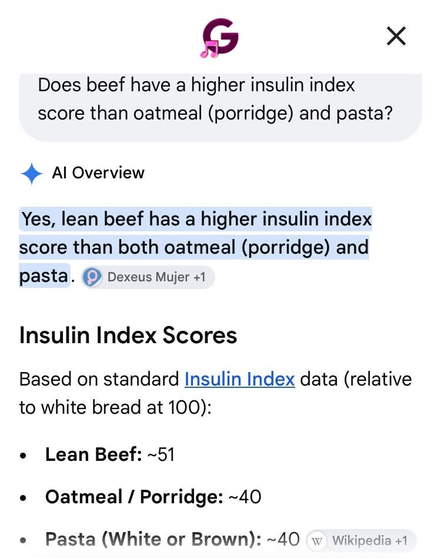

You get just as much of an insulin spike from a protein bar as from a shake.
(The insulin release is proportional to the blood concentration of amino acids.)
Makes sense, because they are both made from rapidly digesting processed protein powders.
Louis argues that a protein bar spikes insulin as much as a shake, since insulin release tracks blood amino acid levels and both use rapidly digested processed protein. The shared study compared 20 g of milk protein as a bar or a drink in 12 healthy young women.
You get just as much of an insulin spike from a protein bar as from a shake.
(The insulin release is proportional to the blood concentration of amino acids.)
Makes sense, because they are both made from rapidly digesting processed protein powders.
Do protein bars digest slower than protein drinks? It is generally assumed that solid foods are digested more slowly when compared to liquid foods. However, solid foods typically differ from liquid foods not just in food form (liquid vs solid), but also in type of protein, other nutrients, and energy content. Therefore, it was unclear if the form (liquid vs solid) as an isolated factor impacts protein digestion and absorption.
In this study, we compared the plasma amino acid response between 20 g of milk protein as bar or drink in 12 healthy young women. Both products were specifically designed for this study to allow the ingredients to be matched as good as possible.
Key findings:
❌The plasma amino acid response did not differ between the liquid and solid treatments
❌No differences in hunger ratings were observed between the treatmentWhat does this mean?
Our data suggest that the food form (solid vs liquid) does not impact the digestion and absorption of protein. It should be noted that the protein bar treatment also drank water (although we don’t think this impacted the results).Keep in mind that a protein drink and bar are typically not matched for ingredients in practice. Protein bars often contain collagen protein for texture and a chocolate solid outer layer. Therefore, the average protein bar will likely result in a slightly slower digestion and absorption of amino acids when compared to an average protein bar.
In conclusion, the plasma amino acid response to protein ingestion is not dependent on the food form (solid vs liquid).Our study:
Paper · Int J Sport Nutr Exerc Metab · 2023The Postprandial Plasma Amino Acid Response Does Not Differ Following the Ingestion of a Solid Versus a Liquid Milk Protein Product in Healthy Adult Females.Dietary protein digestion and amino acid absorption rates are modulated by numerous factors such as the food matrix. It has been speculated that protein ingested in liquid form is more rapidly digested and absorbed when compared with ingestion in solid form. Here, we assessed the postprandial plasma amino acid availability following ingestion of a single bolus of protein provided in either liquid or solid form.…pubmed.ncbi.nlm.nih.gov
Louis argues excess protein spikes insulin: calorie for calorie, whey protein raises insulin more than white bread or pure glucose, and beef more than oatmeal or white pasta. He criticizes influencers who ignore the insulin index of protein and warns that frequent extra protein keeps insulin high.

The poster repeats that beef raises insulin more than oatmeal or pasta calorie for calorie, links earlier posts and shows a Google Gemini response as a fact check. The underlying source is the insulin index paper.

The post cites the 1997 insulin index paper showing beef raises insulin more than an equal-calorie portion of white pasta or oatmeal, and a 2012 study showing whey protein raises insulin more than glucose or white bread. It uses this to counter influencer claims that only carbohydrates raise insulin.
Louis explains that insulin signals the liver to produce cholesterol, one reason insulin-resistant people tend to have high LDL. Losing visceral and especially liver fat to correct insulin resistance should therefore bring LDL down naturally. Supported by a Mass General Brigham explainer.
Louis shares Valter Longo's ProLon L-Protein, a plant-based powder designed to limit insulin, mTOR and IGF1 activation, with 25 g of complete protein. He says whey raises insulin more than white bread or glucose, but the best option is simply eating the whole beans and peas. Not an affiliate.

Louis explains that every macronutrient triggers insulin, carbohydrates usually the most and fastest, but some proteins like whey raise insulin more than carbohydrate calorie for calorie, contradicting influencer claims.